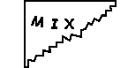
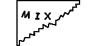

QUESTION 1:
Say that you came across the following torn slip of paper. What can it mean? 


Computer memory stores arbitrary bit patterns. Making sense of these patterns involves the use of data types.
Say that you came across the following torn slip of paper. What can it mean? 